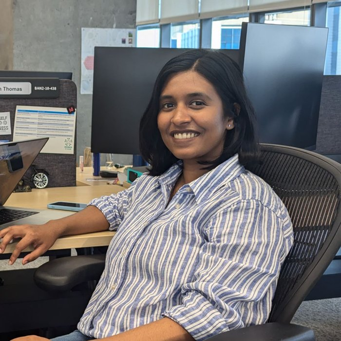

Start in the real world
Good engineering begins where it will be used, not on a slide. The problem sets the design.
Inch By Centimeter / Technology R&D
We're a technology research and development company working out what it takes for machines to be truly useful, out in the world and to the people in it.
1 in = 2.54 cm. Move across the tape to measure.
Why we exist
Many of the hardest problems left are physical. The world is heavy, fragile and unpredictable, and the people in it deserve technology that meets them there.
We're working toward machines that fit quietly into the places people work and live, and that give them back time, strength and independence. It won't happen all at once. It will happen inch by centimeter.
How we work
Good engineering begins where it will be used, not on a slide. The problem sets the design.
Machines don't care about intentions. We test early and trust the data.
One that works is a demo. We think about the thousandth from the first.
Team

Technical Founder and CEO | Ex-Microsoft, Ex-Adobe
An engineer with a passion for robotics and for helping people through better accessibility. Sherin built Windows Voice Access and contributed to Narrator, and started Inch By Centimeter to bring that same focus to the physical world.
sherin@inxcm.comPrincipal Engineer
An experienced low-level software engineer working across C++, operating systems and browsers.
thomas@inxcm.comGet in touch, and let's figure out how we can work on it together.
hello@inxcm.com